| 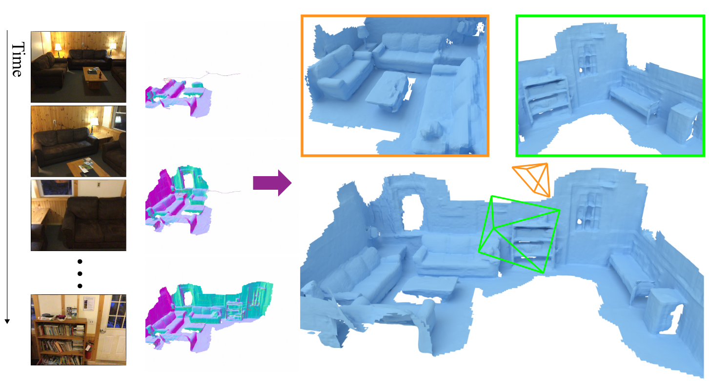 | GP-Recon: Online Monocular Neural 3D Reconstruction with Geometric Prior Zi-Xin Zhou, Shi-Sheng Huang*, Yan-Pei Cao, Tai-Jiang Mu, Ying Shan, Hongbo Fu, Song-Hai Zhang*. (* Correpsonding Author) [arXiv] preprint arXiv:2209.15153 IEEE transactions on Visualization and Computer Graphics (TVCG), Minor Revision
|
| 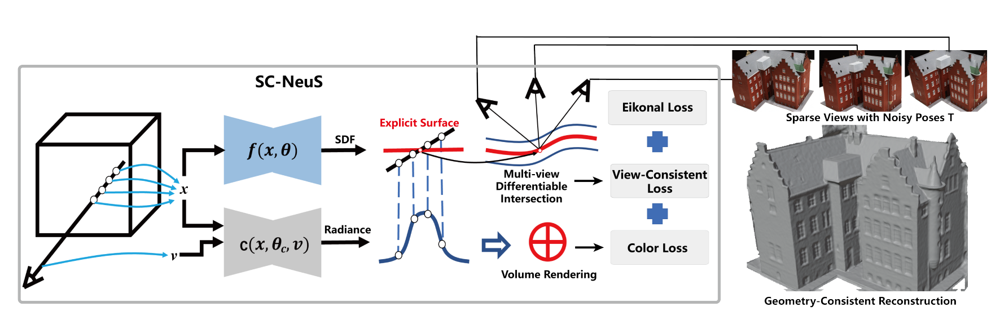 | SC-NeuS: Consistent Neural Surface Reconstruction from Sparse and Noisy Views Shi-Sheng Huang, Zi-Xin Zou, Yi-Chi Zhang, Yan-Pei Cao, Ying Shan. AAAI 2024, Accepted
|
| 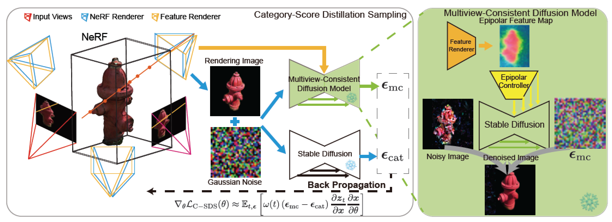 | Sparse3d: Distilling multiview-consistent diffusion for object reconstruction from sparse views Zi-Xin Zou, Weihao Cheng, Yan-Pei Cao, Shi-Sheng Huang, Ying Shan, Song-Hai Zhang. AAAI 2024, Accepted
|
| 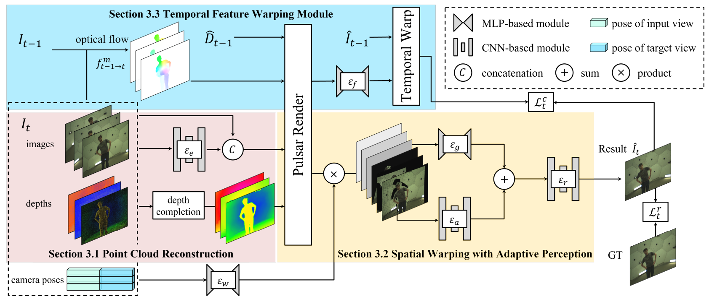 | Dynamic View Synthesis with Spatio-Temporal Feature Warping from Sparse Views Deqi Li, Shi-Sheng Huang*, Tianyu Shen, Hua Huang. (* Correpsonding Author) ACM MM 2023 Accepted
|
| 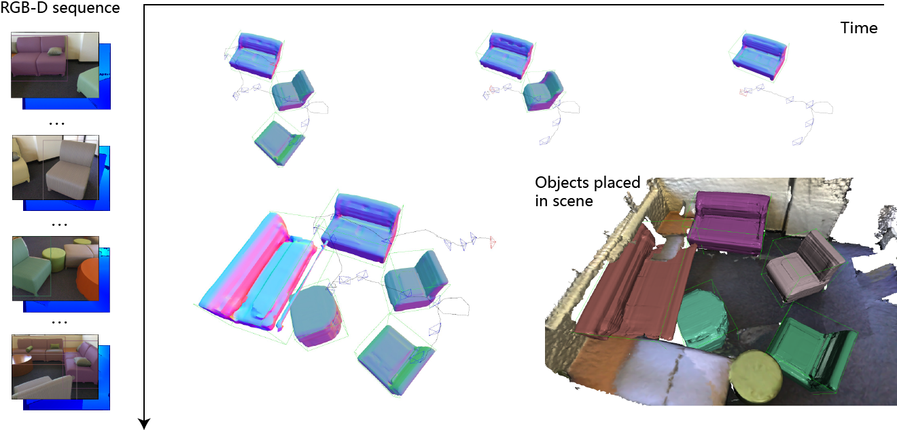 | ObjectFusion: Accurate Object-level SLAM with Neural Object Priors Zi-Xin Zhou, Shi-Sheng Huang*, Tai-Jiang Mu, Yu-Ping Wang. (* Correpsonding Author) CVM 2022, recommended to Graphical Models
|
| 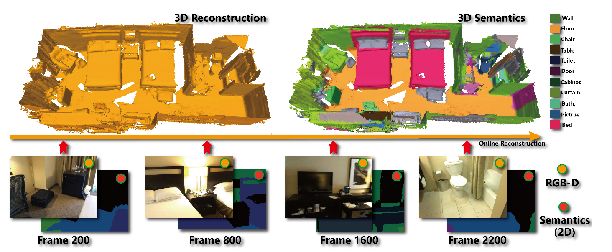 | Real-Time Globally Consistent 3D Reconstruction with Semantic Priors Shi-Sheng Huang, HaoXiang Chen, Jiahui Huang, Hongbo Fu, Shi-Min Hu. IEEE transactions on Visualization and Computer Graphics (TVCG), Accept, 2021
|
| 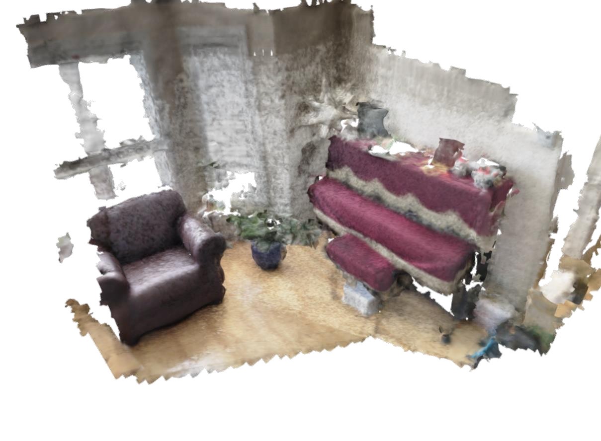 | DI-Fusion: Online Implicit 3D Reconstruction with Deep Priors Jiahui Huang, Shi-Sheng Huang*, Haoxuan Song, Shi-Min Hu. IEEE CVPR 2021:8932-8941 https://openaccess.thecvf.com/content/CVPR2021/papers/Huang_DI-Fusion_Online_Implicit_3D_Reconstruction_With_Deep_Priors_CVPR_2021_paper.pdf
|
| 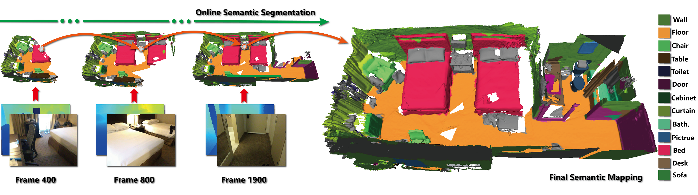 | Supervoxel Convolution for Online 3D Semantic Segmentation Shi-Sheng Huang, Ze-Yu Ma, Tai-Jiang Mu, Hongbo Fu, Shi-Min Hu. ACM Transactions on Graphics, Vol. 40, No. 3, 2021
|
| 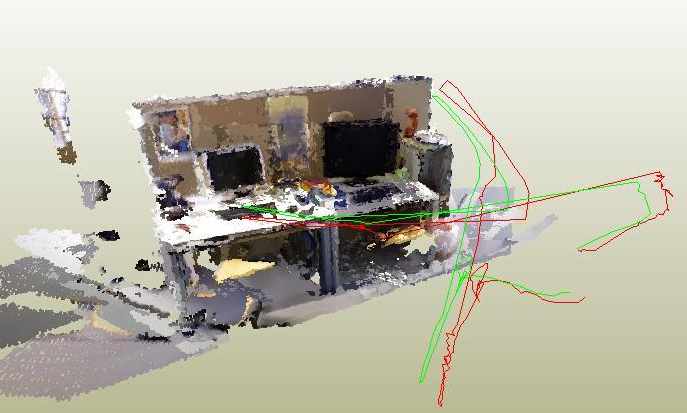 | Accurate Dynamic SLAM using CRF-based Long-term Consistency Zheng-Jun Du*, Shi-Sheng Huang*, Tai-Jiang Mu, Qunhe Zhao, Ralph Martin, Kun Xu. IEEE transactions on Visualization and Computer Graphics (TVCG) 2020 DOI:10.1109/TVCG.2020.3028218
|
| 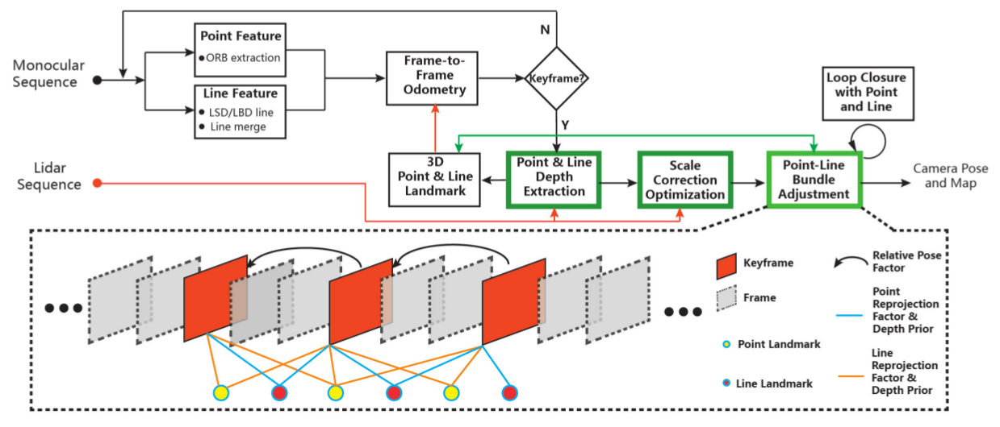 | LiDAR-Monocular Visual Odometry using Point and Line Features Shi-Sheng Huang, Ze-Yu Ma, Tai-Jiang Mu, Hongbo Fu, Shi-Min Hu. ICRA 2020:1091-1097
|
| 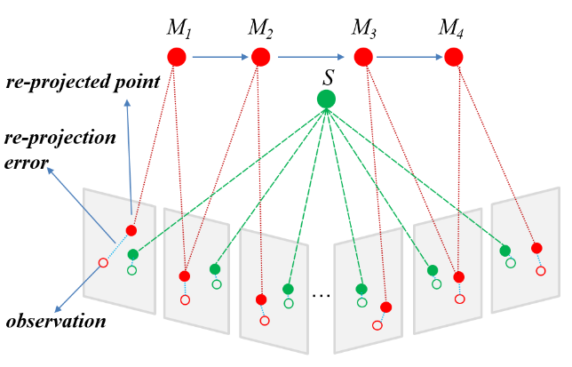 | Accurate RGB-D SLAM in Dynamic Environments using Observationally Consistent Conditional Random Fields Zheng-Jun Du, Shi-Sheng Huang, Tai-Jiang Mu, Qunhe Zhao, Ralph Martin, Kun Xu. Accepted by CVM 2020
|
| 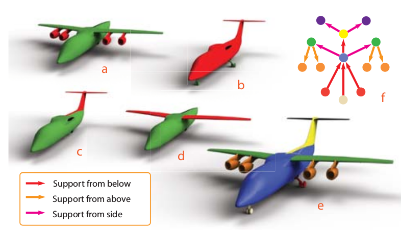 | Support Substructures: Support-Induced Part-Level Structural Representation Shi-Sheng Huang, Hongbo Fu, Ling-Yu Wei, and Shi-Min Hu. IEEE transactions on Visualization and Computer Graphics (TVCG), 22(8): 2024-2036 (2016). |
 |
Structure guided interior scene synthesis via graph matching Shi-Sheng Huang, Hongbo Fu, and Shi-Min Hu. Graphical Models, 85: 46-55 (2016). |
| 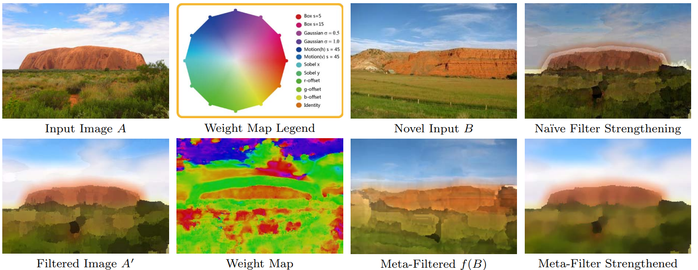 | Parametric Meta-Filter Modeling from a Single Example Pair Shi-Sheng Huang, Guo-Xin Zhang, Yu-Kun Lai, Johannes Kopf, Daniel Cohen-Or, and Shi-Min Hu. Accepted by CGI 2014, The Visual Computer 30(6-8): 673-684 (2014).
|
| 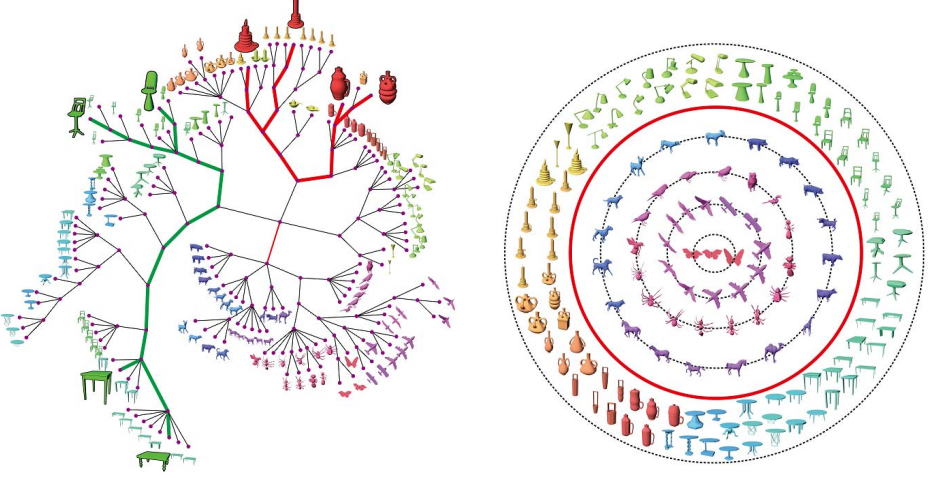 | Qualitative Organization of Collections of Shapes via Quartet Analysis Shi-Sheng Huang, Ariel Shamir, Chao-Hui Shen, Hao Zhang, Alla Sheffer, Shi-Min Hu, and Daniel Cohen-Or. ACM Transactions on Graphics (Proceedings of SIGGRAPH 2013), 32(4): 71:1-71:10 (2013).
|
| 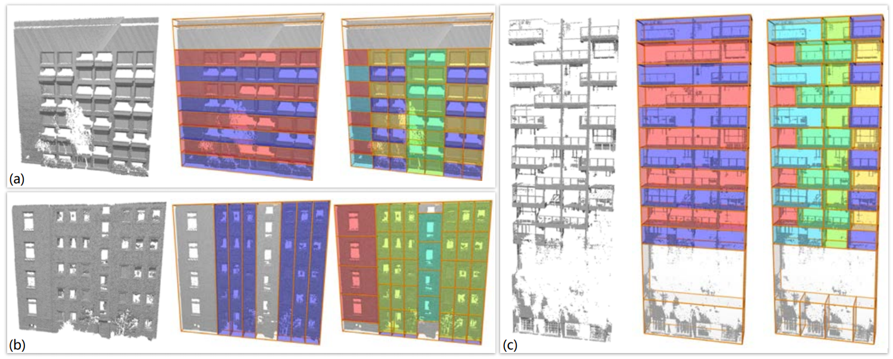 | Adaptive Partitioning of Urban Facades Chao-Hui Shen, Shi-Sheng Huang, Hongbo Fu, Shi-Min Hu. ACM Transactions on Graphics (Proceedings of SIGGRAPH Asia 2011), 30(6): Article 184.
|
| 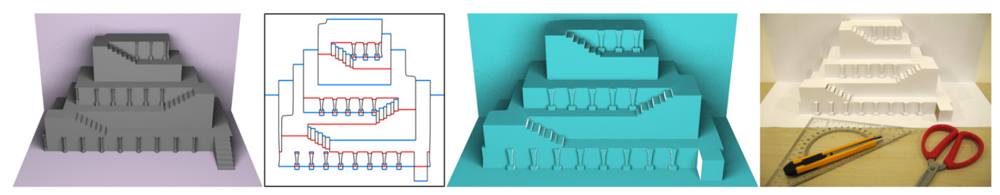 | Popup: Automatic Paper Architectures from 3D Models Xian-Ying Li, Chao-Hui Shen, Shi-Sheng Huang, Tao Ju, and Shi-Min Hu. ACM Transactions on Graphics (Proceedings of SIGGRAPH 2010), 29(4): article 111.
|
Technique Report
I spent about two years on multi-sensor-fusion-based vSLAM for a low-cost commercial vaccum cleaner robots, including mono-VIO, mono-odometry, mono-inertial-odometry vSLAM etc. There following two works are the reprensentive works with some of which were successfully applied on products like [Bob-Pethair-Vision]..
Accurate Monocular Visual-inertial SLAM using a Map-assisted EKF Approach arXiv: https://arxiv.org/abs/1706.03648 This is a high accurate monocular VIO SLAM system, especially on the initialization of Cam-IMU setup /p; |
Tightly-coupled Monocular Visual-odometric SLAM using Wheels and a MEMS Gyroscope arXiv: https://arxiv.org/abs/1804.04854 This is a high accurate monocular-odometry SLAM system, which is the origin of VSLAM Navigation product of Vaccum Cleaner
|
Code/Software
For a Visual-SLAM beginner, you had better prepare a math library for solving the factor graph based Bundle Adjustment problems. I preprared a math library with point-, line-, plane- reprojection factors called MyG2O, please try it!
对于视觉SLAM初学者来说,一个功能完整的数学库(用于求解BundleAdjustment)往往很重要.我准备了一个这样的数学库叫MyG2O, please try it!
[PrePrint[~1M]] [Code[GitHub]]
Education and Experience
I was a postdoc researcher at Graphics & Geometric Computing Group , Tsinghua University in Beijing, working with Prof. Shi-Min Hu.
I got my PhD degree from Graphics and Geometric Computing Group in 2015.
| 2012.9-2013.2 | Tel-Aviv University and IDC(Herzliya), Israel | Visiting Scholar PhD Student. | ||
| 2011.9-2011.11 | School of Creative Media, City Univ. of Hong Kong, Hong Kong | Visiting Research Assistant |
| 2010.9-2015.10 | Department of Computer Science and Technology, Tsinghua University | PhD Degree. | ||
| 2006.9-2010.7 | Information and Computation, School of Science, Beijing Jiao-Tong University | Bachlor Degree, with Honor (Ranked Top 1%.) |
Collaborators
Prof. Shi-Min Hu, Prof. Hongbo Fu, Prof. Kun Xu, Prof. Yu-Kun Lai
Prof. Daniel Cohen-Or, Prof. Ariel Shamir, Prof. Hao Zhang, Prof. Alla Sheffer, Prof. Tao Ju, Dr. Johannes Kopf
My Friends:
Chao-Hui Shen, Xian-Ying Li, Guo-Xin Zhang
Lin Gao, Fang-Lue Zhang, Miao Wang,Tai-Jiang Mu
Academic Services
Reviewer. SIGGRAPH 2023, SIGGRAPH Asia 2023, SIGGRAPH 2024
Reviewer. IEEE VR 2021,2023,2024
Reviewer. EG 2021
Reviewer. PG 2020
Reviewer. GMP 2020
Reviewer. CVM 2013, 2015, 2020
Reviewer. SIGGRAPH 2014,2015, SIGA 2014
Reviewer. Journal Computers & Graphics 2013, 2014, 2015
Reviewer. the Visual Computer 2014, 2015
Reviewer. CAG-D 2014,2015, SPM 2014,2015, 2021, CGI 2013,2014,2015
Reviewer. IEEE TVCG 2014, 2015
Reviewer. SGP 2015, EG 2015
Funding
China Postdoctoral Science Foundation (Grant No.: 2019M660646)
Awards and Honors
2013 - Tsinghua Friends--Tencent Outstanding Innovation Scholarship Award
2010 - Outstanding College Graduates in Beijing, Outstanding College Graduates of Beijing Jiao-Tong University.
2009 - Yi-Seng Mao Scholar, Yi-Sheng Mao Science and Education Foundation.
2006-2010 - Many Kinds of Scholars and Honors in Beijing Jiao-Tong University.
2005 - Outstanding High School Student in Hunan.
Notice: All the digital papers and videos in this page are the authors' version for personal use only.
Last updated by Shi-Sheng Huang, May, 2021 in Beijing.